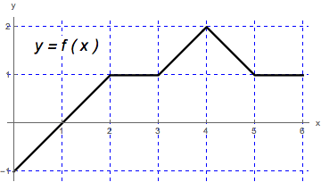

- (a)
- Compute the net area of the region between the graph of \(f\) and the \(x\)-axis, on the interval \([0,6]\). [3]
- (b)
- Draw a rectangle with base on the \(x\)-axis, \(0\leq x \leq 6\), whose area is equal to the net area in part (a).
- (c)
- In the figure, mark a point \(c\) in \((0,6)\) such that \(f(c)\) is the height of the rectangle from part (b).
- (d)
- Using the figure and parts (a-c), what is the relationship between the rectangle
from part (b), the net area from part (a), and the average value of \(f\) on \([0, 6]\)? [3] The Mean Value Theorem for integrals states that there exists a point \(d\) in \((a, b)\) such that\[ f(d) = \frac {1}{b-a}\int _a^b f(x) \d x. \]The right-hand side of this equation is the average value of \(f\) on \([a, b]\).
Rewriting we have
\[ f(d) \cdot (b-a) = \int _a^b f(x) \d x. \]The right-hand side of this equation is the net area found in part (a): \(\int _0^6 f(x) \d x=5\).
The left-hand side of this equation is the area of the rectangle in part (b). The point \(d\) is the point \(c\) we found in part (c). From (b) and (c), \(f(c)=\frac {5}{6}\) is the average value of \(f\) on \([0,6]\).